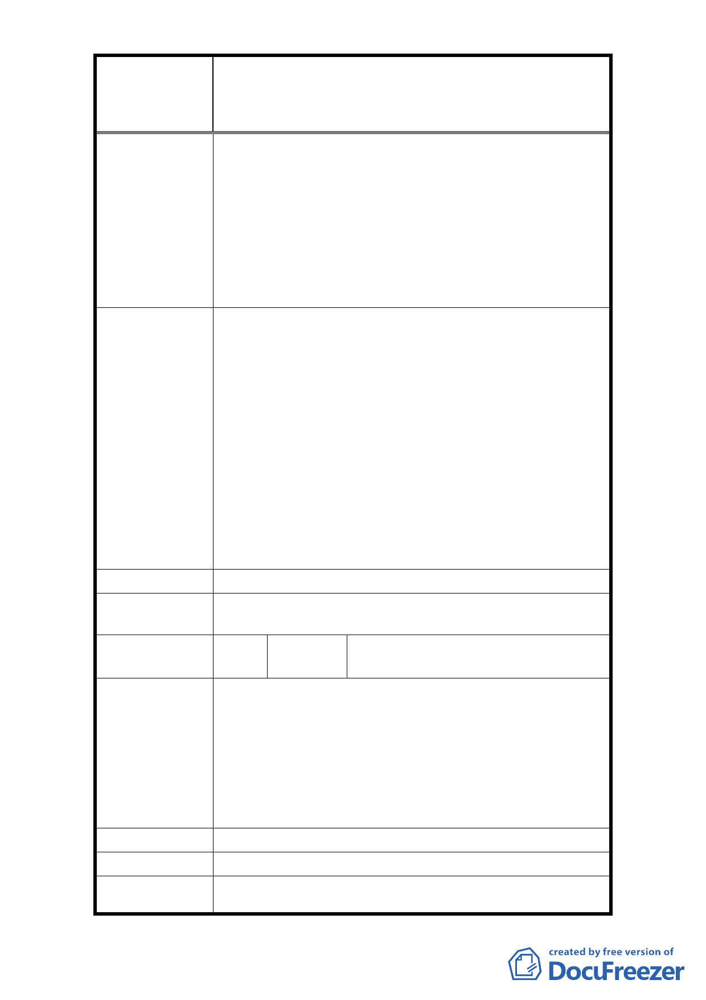

修訂臺北市大安區青田街保存區聚落風貌保存專用區細部計
案
名
畫、變更部分第三種住宅區、第三種商業區(特)為第三種住宅區
(特)(日式宿舍)及第三種商業區(特)(日式宿舍)暨劃定週邊地
區都市設計管制細部計畫案
城市灰色的空間卻常成為阻礙人與人的親密接觸；
人們對自然有深切的渴望與需求，在城市與大樹一
同生活，為城市添加綠色記憶，這是塑造城市新風
格的契機，也是給下一代最美的禮物。
3. 本區日式房舍及生長多年的樹木已形成都市區難得
一見的『特色』，最近『青田七六』引起巨大的迴響，
證明保留古蹟是可行並能吸引人潮的。請不要以『目
前』的利益而忽略了後代子孫的權益。
1. (1)請勿變更計畫，保留原計畫。(2)限開挖率！
2. 綠色城市不是只有綠地公園，而是將綠意自然放進
生活的每個角落，保留青田街最吸引人的特色，讓
未來開發商與住戶有共識與目標，所有的新建設都
為樹立『青田綠街廓』的社區風格努力。綠色的社
建 議 辦 法 區風格創造新商機、帶動生活水準、成為城市生活
提案的新典範，是政府、開發商、住民共營共利的
新創制。
3. (1)保留院深相關條文(第六條第二項)。(2)保留開
挖率 60％的條文（第七條）。(3)保留與樹木保護相
關之條文，並不予增加第八條第二項條文。
市 府 回 覆 意 見 同編號 27 回覆意見。
委 員 會 決 議 同編號 27 決議。
編
號 31
陳情人
丁辭同、沈奕伶、陳毓文、王筑暄、
張如瑩
(1)青田街古蹟與綠樹具有時代意義與文化內涵，請予
以保留。(2)希望保留青田街原有的綠樹和庭院，讓青
田街成為具有文化和休憩特色的街區。(3)綠樹乃青田
陳 情 理 由 街最大資產對環境綠化有極大功能，應予保留。(4)
請保持歷史文物與遺跡。(5)過度開發將使青田街失去
原有靜謚古樸的獨特風貌，使青田街淪為嘈雜髒亂的
鬧市。
建 議 辦 法 請勿變更原有計畫。
市 府 回 覆 意 見 同編號 27 回覆意見。
委 員 會 決 議 同編號 27 決議。
- 38 -